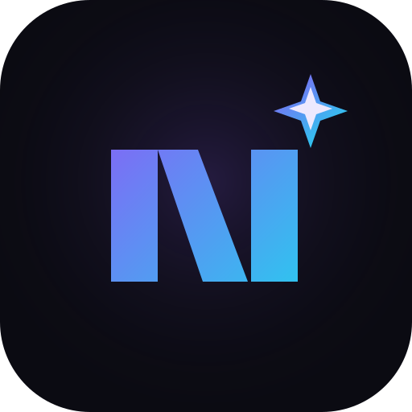
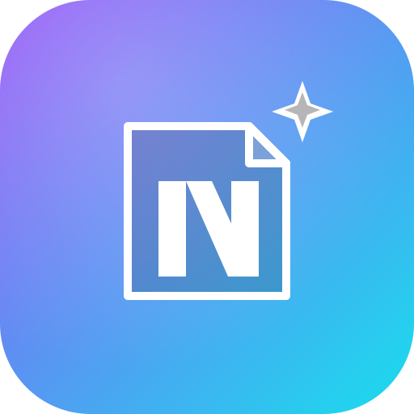
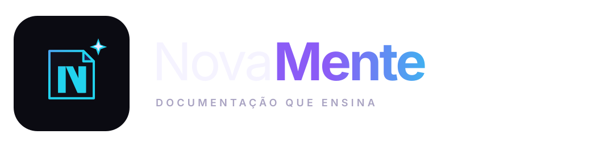
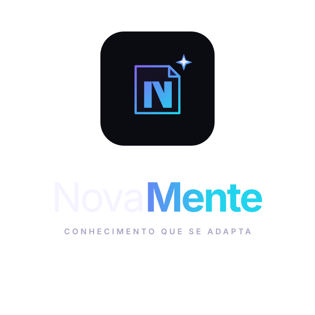

Página + faísca, em teste.
O conceito 3 tem a narrativa mais pedagógica: a página que se dobra em N e libera a faísca do entendimento. Esta folha testa o símbolo em escala pequena, monocromático, lockups e aplicações reais para descobrir o que sobrevive e o que precisa simplificar.

O símbolo principal funciona como assinatura em tamanhos médios e grandes. A faísca é o elemento mais proprietário; a página dá o contexto de documentação.
Teste de escala
16 px24 px32 px48 px64 px96 px128 px
16 pxLinha 1: símbolo principal. Linha 2: versão compacta (N + faísca) para favicon.
Aplicações
Ícone de app

Versão com fundo em gradiente para launcher e loja.
Favicon / aba
A versão compacta evita que a página desapareça no tamanho mínimo.
Header do produto

Lockup horizontal para a área da empresa e landing.
Avatar / social
O N + faísca funciona bem recortado em círculo.
Variações
Principal
Página + N + faísca. Usar a partir de 48 px.
Compacto
N + faísca. Favicon, avatar e tamanhos de 16–32 px.

Monocromático claro
Para fundos escuros, impressão em uma cor e carimbos.
Monocromático escuro
Para fundos claros, documentos e papelaria.
Horizontal
Header, assinatura de e-mail e apresentações.

Vertical
Capas, materiais didáticos e posts quadrados.